KJDraw
KJDrawKJDRAW / SHOWCASE
Showcase
Browse original editable drawings by discipline, open them in the Playground and trace each example to its public source.
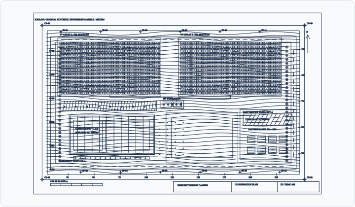
Multidisciplinary
Resilient energy campus
Coordination plan
Site, topography, access, buildings, solar arrays, energy distribution and revision-ready equipment in one editable drawing.
Case details
sample-resilient-campus
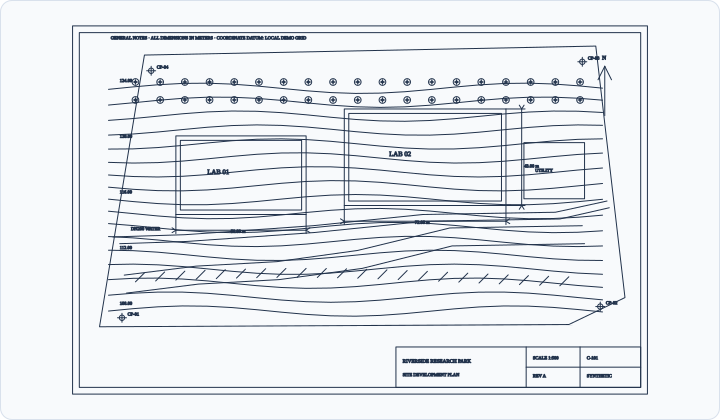
Civil & site
Riverside research park
Site development plan
A bounded civil plan with synthetic contours, roads, buildings, utilities, planting, dimensions and title information.
Case details
sample-site-plan
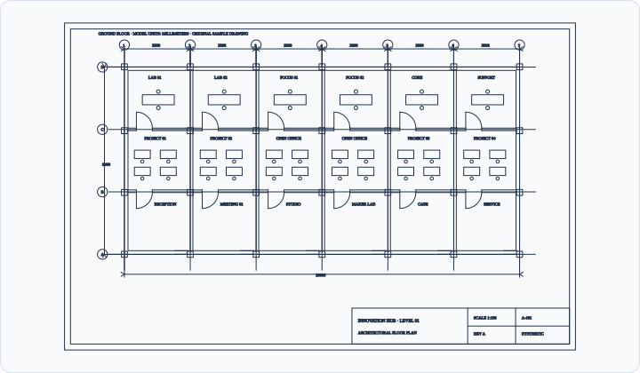
Architecture
Innovation hub
Ground-floor plan
A sheeted floor plan with grids, walls, columns, doors, windows, room labels, furniture and dimensions.
Case details
sample-architecture
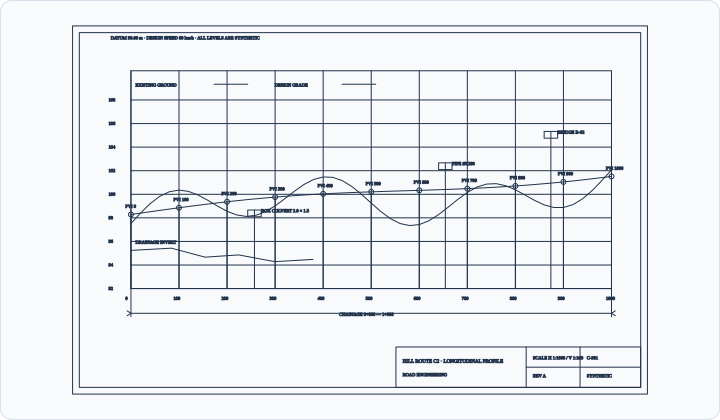
Transportation
Hill route C2
Longitudinal profile
A station-based road profile with existing ground, design grade, grid, drainage, structures, labels and dimensions.
Case details
sample-road-profile
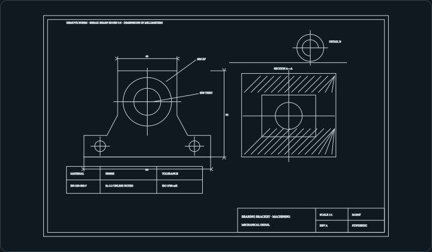
Mechanical
Bearing bracket
Manufacturing drawing
A millimetre manufacturing sheet with orthographic geometry, holes, centre lines, section hatching, dimensions and notes.
Case details
sample-mechanical
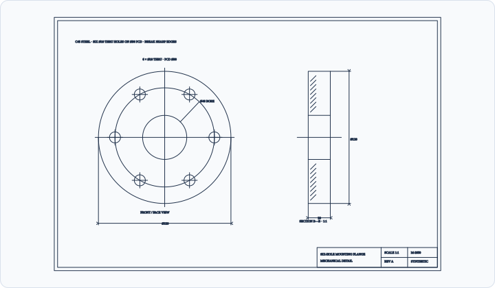
Mechanical
Six-hole mounting flange
Manufacturing drawing
A parametric face and section drawing for a 120 mm flange with a 40 mm bore and six through holes on a 90 mm pitch circle.
Case details
sample-mechanical-flange
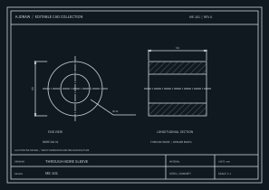
Mechanical
Through-bore sleeve
Manufacturing drawing
A dimensioned sleeve sheet with front, side and section views, centre lines and a title block.
Case details
sleeve-bushing
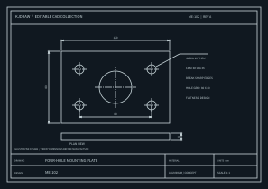
Mechanical
Four-hole mounting plate
Manufacturing drawing
An editable mounting plate drawing with hole spacing, dimensions, side view and notes.
Case details
four-hole-plate
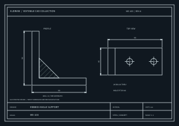
Mechanical
Ribbed angle support
Manufacturing drawing
A bracket sheet with orthographic views, an editable rib detail, holes and native dimensions.
Case details
angle-support
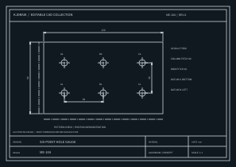
Mechanical
Six-point hole gauge
Inspection drawing
A repeated hole pattern with centre lines, dimension chains and an inspection-ready sheet layout.
Case details
hole-gauge
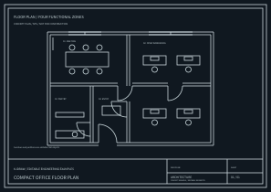
Architecture
Compact office floor plan
Architectural plan
A not-to-scale office concept with editable rooms, circulation, doors and windows.
Case details
compact-office-plan
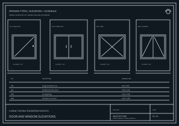
Architecture
Door and window elevations
Architectural detail
Coordinated door and window elevations with editable marks, sizes and a compact schedule.
Case details
door-window-elevations
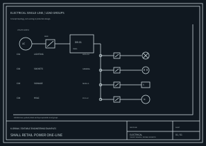
Electrical
Retail power one-line
Electrical schematic
An editable distribution one-line with feeder, protective devices, branch circuits and load labels.
Case details
retail-power-one-line
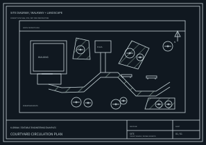
Civil & site
Courtyard circulation plan
Landscape plan
A not-to-scale courtyard concept with editable paths, planting and seating.
Case details
courtyard-circulation-plan
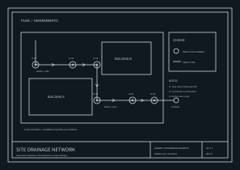
Civil & site
Site drainage network
Utility plan
An editable schematic of inspection chambers, gravity pipes, flow arrows and a legend.
Case details
drainage-network
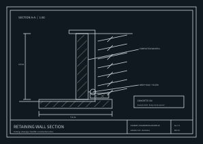
Civil & site
Retaining wall section
Civil construction detail
A section showing footing, wall stem, backfill, drain and editable hatch patterns.
Case details
retaining-wall
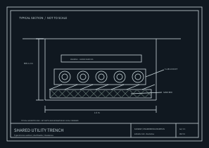
Civil & site
Shared utility trench
Utility section
A typical trench schematic with duct bank, bedding, warning tape and clearance annotations.
Case details
utility-trench
Core capabilities
Editable 2D entities
Geometry specimen
Line, circle, arc, ellipse, closed polyline and bounded hatch generated as native editable CAD entities.
Case details
geometry
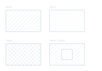
Core capabilities
Hatch patterns and islands
Hatch specimen
Three native hatch patterns and an unfilled island, with editable boundary polylines and DXF output.
Case details
hatch-patterns
Core capabilities
Native dimensions
Annotation specimen
Aligned, radius, diameter and three-point angular dimensions backed by a named dimension style.
Case details
dimensions
Core capabilities
Bilingual typography
Font specimen
Editable TEXT and MTEXT exercise a local CJK-first font fallback stack and Unicode engineering symbols.
Case details
typography
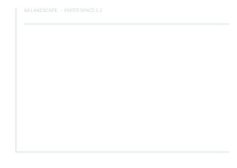
Output & interop
A4 vector print layout
Layout and print specimen
A paper-space A4 landscape sheet with explicit margins, 1:1 plot settings and vector print output.
Case details
layout-print
Output & interop
UTF-8 DXF import
Interoperability specimen
A compact DXF 2018 source is imported with original handles, editable geometry and UTF-8 engineering text.
Case details
dxf-import
Editing
Transactional editing
Undo and redo specimen
A deterministic move demonstrates edit history, undo, redo and atomic rejection of an invalid edit.
Case details
editing-history
Core capabilities
Reusable block references
Blocks specimen
One native block definition is inserted three times with independent position, scale and rotation.
Case details
blocks-references
No matching examples.